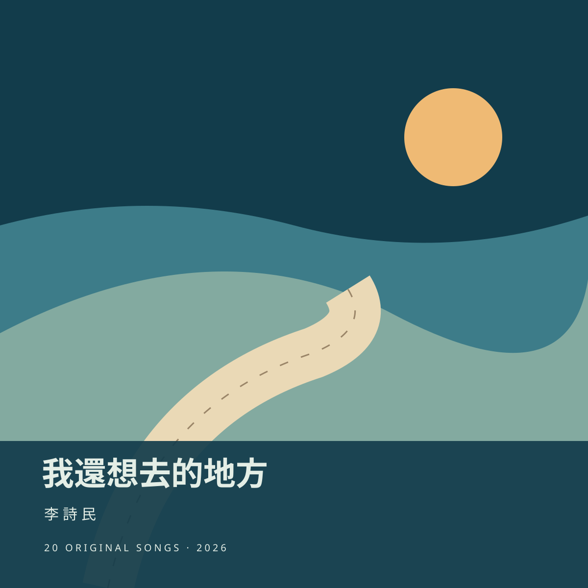

<!doctype html><html lang="zh-Hant"><meta charset="utf-8"><meta name="viewport" content="width=device-width,initial-scale=1"><title>我還想去的地方｜李詩民</title><style>body{margin:0;background:#123c4b;color:#e4eee6;font:16px/1.8 system-ui}main{max-width:1000px;margin:auto;padding:40px 24px}.hero{display:grid;grid-template-columns:280px 1fr;gap:36px;align-items:center}img{width:100%;border-radius:8px}h1{font-size:36px;line-height:1.4}a{color:#efba74}ol{list-style:none;padding:0}li{padding:22px 0;border-bottom:1px solid #ffffff30}strong{font-size:20px}audio{display:block;width:100%;margin-top:12px}small{display:block;opacity:.8}@media(max-width:650px){.hero{grid-template-columns:1fr}.hero img{max-width:300px}h1{font-size:30px}}</style><main><section class="hero"><div><small>李詩民 · 20 首原創國語歌曲 · 2026.10.16</small><h1>我還想去的地方</h1><p>把想去的地方，走成今天的方向。</p><p>本機製作完成，尚未發布；依本人要求未試聽。</p><a href="/?album=places-to-go&track=1">開啟黑膠播放器</a> · <a href="assets/audio/places-to-go/places-to-go-album.zip" download>整張專輯 ZIP</a></div></section><ol><li><strong>01 我還想去的地方</strong><small>我還想去的地方 · 3:03</small><audio controls preload="none" src="assets/audio/places-to-go/track01.mp3"></audio><a href="assets/audio/places-to-go/track01.mp3" download="01-我還想去的地方.mp3">下載 MP3</a></li><li><strong>02 把導航關掉</strong><small>把導航關掉一下 · 2:07</small><audio controls preload="none" src="assets/audio/places-to-go/track02.mp3"></audio><a href="assets/audio/places-to-go/track02.mp3" download="02-把導航關掉.mp3">下載 MP3</a></li><li><strong>03 副駕駛座的地圖</strong><small>副駕駛座的地圖 · 2:44</small><audio controls preload="none" src="assets/audio/places-to-go/track03.mp3"></audio><a href="assets/audio/places-to-go/track03.mp3" download="03-副駕駛座的地圖.mp3">下載 MP3</a></li><li><strong>04 下一個交流道</strong><small>下一個交流道 · 2:47</small><audio controls preload="none" src="assets/audio/places-to-go/track04.mp3"></audio><a href="assets/audio/places-to-go/track04.mp3" download="04-下一個交流道.mp3">下載 MP3</a></li><li><strong>05 海線往南</strong><small>海線往南 心往外 · 2:56</small><audio controls preload="none" src="assets/audio/places-to-go/track05.mp3"></audio><a href="assets/audio/places-to-go/track05.mp3" download="05-海線往南.mp3">下載 MP3</a></li><li><strong>06 不為誰打卡</strong><small>今天不為誰打卡 · 2:46</small><audio controls preload="none" src="assets/audio/places-to-go/track06.mp3"></audio><a href="assets/audio/places-to-go/track06.mp3" download="06-不為誰打卡.mp3">下載 MP3</a></li><li><strong>07 山路轉彎以後</strong><small>山路轉彎以後 · 3:08</small><audio controls preload="none" src="assets/audio/places-to-go/track07.mp3"></audio><a href="assets/audio/places-to-go/track07.mp3" download="07-山路轉彎以後.mp3">下載 MP3</a></li><li><strong>08 一張單程車票</strong><small>一張單程車票 · 2:18</small><audio controls preload="none" src="assets/audio/places-to-go/track08.mp3"></audio><a href="assets/audio/places-to-go/track08.mp3" download="08-一張單程車票.mp3">下載 MP3</a></li><li><strong>09 漁港六點半</strong><small>漁港六點半 · 3:06</small><audio controls preload="none" src="assets/audio/places-to-go/track09.mp3"></audio><a href="assets/audio/places-to-go/track09.mp3" download="09-漁港六點半.mp3">下載 MP3</a></li><li><strong>10 在陌生小鎮住一晚</strong><small>在陌生小鎮住一晚 · 3:22</small><audio controls preload="none" src="assets/audio/places-to-go/track10.mp3"></audio><a href="assets/audio/places-to-go/track10.mp3" download="10-在陌生小鎮住一晚.mp3">下載 MP3</a></li><li><strong>11 背包裡沒帶走的事</strong><small>有些事不必一路帶著 · 3:00</small><audio controls preload="none" src="assets/audio/places-to-go/track11.mp3"></audio><a href="assets/audio/places-to-go/track11.mp3" download="11-背包裡沒帶走的事.mp3">下載 MP3</a></li><li><strong>12 老同學的民宿</strong><small>老同學的民宿 · 2:54</small><audio controls preload="none" src="assets/audio/places-to-go/track12.mp3"></audio><a href="assets/audio/places-to-go/track12.mp3" download="12-老同學的民宿.mp3">下載 MP3</a></li><li><strong>13 修車師傅的午休</strong><small>借你半個午休 · 2:56</small><audio controls preload="none" src="assets/audio/places-to-go/track13.mp3"></audio><a href="assets/audio/places-to-go/track13.mp3" download="13-修車師傅的午休.mp3">下載 MP3</a></li><li><strong>14 山頂沒有訊號</strong><small>山頂沒有訊號 · 2:55</small><audio controls preload="none" src="assets/audio/places-to-go/track14.mp3"></audio><a href="assets/audio/places-to-go/track14.mp3" download="14-山頂沒有訊號.mp3">下載 MP3</a></li><li><strong>15 風比答案先抵達</strong><small>風比答案先抵達 · 3:03</small><audio controls preload="none" src="assets/audio/places-to-go/track15.mp3"></audio><a href="assets/audio/places-to-go/track15.mp3" download="15-風比答案先抵達.mp3">下載 MP3</a></li><li><strong>16 繞遠路的人</strong><small>我是那個繞遠路的人 · 3:03</small><audio controls preload="none" src="assets/audio/places-to-go/track16.mp3"></audio><a href="assets/audio/places-to-go/track16.mp3" download="16-繞遠路的人.mp3">下載 MP3</a></li><li><strong>17 不必每站都下車</strong><small>不必每站都下車 · 2:53</small><audio controls preload="none" src="assets/audio/places-to-go/track17.mp3"></audio><a href="assets/audio/places-to-go/track17.mp3" download="17-不必每站都下車.mp3">下載 MP3</a></li><li><strong>18 回程換我開</strong><small>回程換我開 · 3:09</small><audio controls preload="none" src="assets/audio/places-to-go/track18.mp3"></audio><a href="assets/audio/places-to-go/track18.mp3" download="18-回程換我開.mp3">下載 MP3</a></li><li><strong>19 還有一段路想陪你</strong><small>還有一段路想陪你 · 2:42</small><audio controls preload="none" src="assets/audio/places-to-go/track19.mp3"></audio><a href="assets/audio/places-to-go/track19.mp3" download="19-還有一段路想陪你.mp3">下載 MP3</a></li><li><strong>20 下次從這裡出發</strong><small>下次從這裡出發 · 2:49</small><audio controls preload="none" src="assets/audio/places-to-go/track20.mp3"></audio><a href="assets/audio/places-to-go/track20.mp3" download="20-下次從這裡出發.mp3">下載 MP3</a></li></ol></main></html>